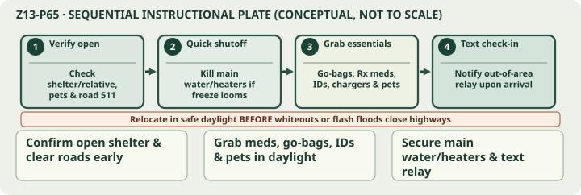

Z13-P65 · Home survival and utilities · New manuscript
Execute planned household relocation to warming centers, cooling centers, or relatives
Move families, pets, and essential supplies safely to powered shelter before hazardous weather traps occupants at home.
When it applies · Extended outages where indoor temperatures, water/sanitation, or medical power needs cross pre-agreed abandonment thresholds.
Equipment · Pre-packed go-bags, prescriptions, vital documents, pet carriers/supplies, fueled vehicle (kept above half-tank), and county shelter contacts.

Actions
- Identify at least TWO pre-arranged relocation destinations BEFORE storm season (a powered friend/relative outside your immediate utility feeder plus official county/municipal warming or cooling centers announced via local radio/211).[U17, D14, T13]
- Leave EARLY during safe daylight and passable road conditions rather than waiting until midnight blizzards or flood crests isolate your neighborhood; verify county road closures (e.g., Minnesota 511) before driving.[U17, D14, D10]
- Before stepping out during a sub-zero departure, execute quick home protection (shut main water valve if freezing is imminent, switch off stove/heaters, grab medications/IDs/pets, and text your out-of-area contact your destination).[U17, U10, D14]
Failure recognition · Waiting until 11 p.m. in a whiteout when indoor temperature hits 42°F and getting stranded in a ditch halfway to a closed shelter.[U17, D10]
Verify · Confirm shelter destination is open (verify pet/accessibility accommodation), go-bags and meds packed, home shutoffs secured, and contact notified.[U17, D14, D17]
Stop or change course · Impassable blizzard whiteouts or active flash floods prohibit driving—hold safely inside until authorities clear roads, or call 911 if an immediate life threat develops indoors.[D10, D05, U17]
Evidence and editorial notes
- D05 · FEMA / Ready.gov · Floods (current web edition)
- Section: Floods > Flash Flood Evacuation, Turn Around Don't Drown, and Re-Entry · Conditions: River flooding, urban flash flooding, dam/levee risk, and post-flood return
Support: Evacuate early when ordered, move to higher ground immediately on Flash Flood Warnings, never walk or drive through floodwater (6 inches knocks down adults; 12 inches carries most cars), and never enter flood-damaged homes until electrical, gas, and structural hazards are cleared.
Limitations: Floodwaters commonly contain raw sewage, fuel, submerged debris, and energized downed wiring. · Conflicting evidence: None; aligns with T07, T16, and N10.
Editorial note: Core flood evacuation, water-avoidance, and safe re-entry evidence. · Specialist reviewer: Emergency management and flood hydrology
Primary source · checked 2026-11-24 - D10 · FEMA / Ready.gov · Winter Weather (current web edition)
- Section: Blizzards, Ice Storms, and Multi-Day Freezing Blackouts · Conditions: Blizzard Warnings, Ice Storm Warnings, and extreme wind-chill emergencies
Support: Complete supply, fuel, and medication staging before storm onset, stay off snow/ice-closed roads, prepare safe non-combustion warmth consolidation indoors, keep vents/exits clear of snowdrifts, and evacuate to community warming shelters early if indoor heat fails.
Limitations: Ice storms down overhead power lines and trees simultaneously, delaying utility restoration for days across wide areas. · Conflicting evidence: None; connects Z15 winter disaster response with Z12/Z13.
Editorial note: Grounds winter-storm travel halts and warming-center transitions. · Specialist reviewer: Cold-weather emergency management
Primary source · checked 2026-11-24 - D14 · FEMA / Ready.gov · Evacuation (current web edition)
- Section: Household Evacuation Logistics, Go-Bags, and Shelter Registration · Conditions: Mandatory or voluntary evacuations across multi-hazard disasters
Support: Pre-pack grab-and-go kits (medications, IDs, water, warm layers, chargers, pet gear), maintain at least two independent route options out of the neighborhood, notify out-of-area contacts upon departure, and register status through official shelter/Red Cross Safe & Well channels.
Limitations: GPS navigation apps can route evacuees onto flooded, smoke-blocked, or closed secondary roads; follow live law-enforcement and DOT closures. · Conflicting evidence: None; operationalizes T13 into household evacuation execution.
Editorial note: Core evacuation execution and accountability evidence in Z15. · Specialist reviewer: Emergency management and transportation safety
Primary source · checked 2026-11-24 - D17 · FEMA / Ready.gov · Prepare Your Pets for Disasters (current web edition)
- Section: Pet, Service-Animal, and Vulnerable-Member Accountability · Conditions: Households with pets, service animals, children, older adults, or access/functional needs
Support: Include leashes, carriers, vaccination records, pet food/water, and pet-friendly shelter lists in household evacuation plans—never leave pets chained or trapped behind; coordinate explicit buddy assignments for children, older adults, and mobility/power-dependent household members.
Limitations: General public Red Cross shelters always admit service animals under ADA rules, whereas companion pets often require separate co-located or pet-friendly shelters. · Conflicting evidence: None; complements T10 disability planning.
Editorial note: Ensures complete household and vulnerable-group accountability in Z15. · Specialist reviewer: Accessible emergency management and animal welfare
Primary source · checked 2026-11-24 - T13 · FEMA / Ready.gov · Evacuation (current web edition)
- Section: Evacuation > Before, During, and After Evacuation · Conditions: Developing wildfire, flood, storm, or infrastructure emergency
Support: Identify multiple exit routes ahead of time, keep essential go-bags and fuel ready, leave promptly when authorities order evacuation, and do not return until officials declare the area safe.
Limitations: Late departure can trap groups behind road closures, smoke, or rising water. · Conflicting evidence: None; pairs with NWS-FLOOD and READY-WILDFIRE.
Editorial note: Establishes clear leave-early decision thresholds for multi-hazard scenarios. · Specialist reviewer: Emergency management
Primary source · checked 2026-11-24 - U10 · FEMA / Ready.gov · Winter Weather (current web edition)
- Section: Winter Household Resilience > Frozen Pipes, Ice Dams, and Heating Loss · Conditions: Sub-zero Upper Midwest winter outages and prolonged cold snaps
Support: Prevent burst pipes by insulating exposed lines, keeping cabinet doors open, shutting off and draining water lines per plumbing guidance if indoor temperatures drop toward freezing, and consolidating household occupants into one safe insulated interior room.
Limitations: Draining hydronic boilers or gas water heaters requires exact manufacturer/plumber steps to prevent equipment damage or gas leaks. · Conflicting evidence: None; regionalizes winter home defense for Minnesota conditions.
Editorial note: Anchors winter pipe protection, thermal-zone consolidation, and abandonment thresholds. · Specialist reviewer: Residential plumbing, HVAC, and cold-weather emergency management
Primary source · checked 2026-11-24 - U17 · FEMA / Ready.gov · Evacuation (current web edition)
- Section: Household Evacuation Thresholds When Utilities Fail · Conditions: Uninhabitable indoor temperatures, sewage backup, persistent CO alarm, or structural/utility hazard
Support: Establish clear pre-agreed exit triggers to relocate to a warming center, hotel, or relatives BEFORE indoor freezing, carbon monoxide alarms, medical-device battery exhaustion, or impassable blizzard roads trap occupants.
Limitations: Waiting until indoor pipes burst or batteries hit zero removes safe travel options. · Conflicting evidence: None; aligns with T13 and E14.
Editorial note: Defines objective household abandonment thresholds in Z13. · Specialist reviewer: Emergency management and cold-weather operations
Primary source · checked 2026-11-24
Source lineage · FEMA Ready.gov Evacuation and Make a Plan; new manuscript · Classification · New manuscript.